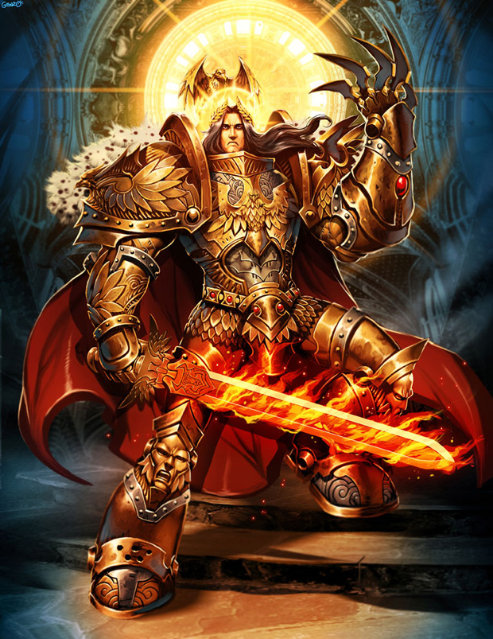
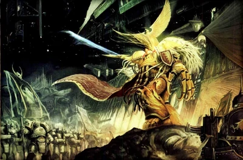
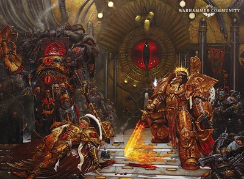

Primeros Tiempos

El Emperador nació en la región de la tierra conocida como Anatolia Central en el octavo milenio antes de Cristo, un lugar de áridas montañas y fríos arroyos. Con el despertar de la Disformidad, la humanidad yacía desnuda ante sus energías.
La disformidad es un universo alternativo compuesto enteramente de energía psíquica generada por los pensamientos, emociones y actividad intelectual de los seres vivientes. La disformidad, en mucha menor medida, está también influida por plantas y animales. A veces se la conoce como el Mar de Almas debido a su espiritual reflejo de la vida, pero también es conocido como el Reino del Caos o el Empíreo. Cuando el universo era joven, la disformidad estaba compuesta por las energías de plantas y primitivos animales y esas energías psíquicas eran relativamente inofensivas; fluían armoniosamente y con fluidez a través de todo lo vivo. Con la evolución de los seres inteligentes, sus potentes mentes llenaron la disformidad con energías nuevas y poderosas.
Las energías naturales de la disformidad eran armoniosas pero las almas de los hombres eran problemáticas, obsesivas, guiadas por la culpa, o imperfectas. Estas energías negativas se congregaron en la disformidad, uniéndose a otras por atracción mutua, hasta que formaron problemáticos puntos de disonancia, como si se tratase de un tumor en un animal. Eventualmente estas fuerzas disonantes se convirtieron en los Poderes del Caos, las entidades psíquicas a las que hoy nos enfrentamos y que llamamos demonios. Fueron creados de los miedos, represiones e insuficiencias de los seres inteligentes.
En los primeros tiempos de la vida del Emperador los Poderes del Caos no eran fuertes y solo acumularon poder cientos de años después.
Desde que los primeros humanos primitivos evolucionaron, las especies desarrollaron una especial relación con la disformidad. Los simples cazadores y recolectores de los primeros tiempos reconocieron las fuerzas naturales que fluían a través de todas las cosas vivas. Aquellos que podían predecir el futuro y sentir el flujo de la energía disforme eran conocidos como chamanes o curanderos tribales. Usaron sus poderes para beneficiar a su gente.
Mientras el número de humanos se incrementaba y la civilización humana crecía desde sus raíces naturales, las particulares energías disformes creadas por los humanos comenzaron a dominar la disformidad. Allí donde las energías de la naturaleza eran armoniosas y benignas, las energías de los hombres eran a menudo impredecibles y peligrosas. Poder, ambición, codicia, lujuria y cientos de otros sentimientos humanos enraizaron en la disformidad y comenzaron a crecer. Al hacerse más poderosos y numerosos los pensamientos de los hombres, los ritmos naturales de la disformidad se vieron interrumpidos y se volvieron menos accesibles a los chamanes. Inevitablemente, el proceso de civilización dañó los lazos de la humanidad con las fuerzas naturales de la disformidad, y crearon otras nuevas basadas en su propio carácter. Con el tiempo las fuerzas disonantes crecieron y se transformaron en los Poderes del Caos.
El Emperador nació mientras el ritmo de la Disformidad aún fluía con fuerza a través de todas las cosas naturales. Los viejos chamanes eran guiados por la disformidad y en su vuelta guiaban a su pueblo. Pero el crecimiento del poder de la humanidad se estaba dejando sentir, y los chamanes temían que todo su conocimiento llegara a desaparecer. Las energías de las que dependían se volvían más y más difíciles de controlar. Aún peor, estaban perdiendo su habilidad para reencarnarse. Cuando un chamán moría su espíritu fluiría por la disformidad, bañándose en sus energías, esperando el momento en que encontrara un nuevo cuerpo. Por este motivo los chamanes nunca morirían. Pero ahora esas almas eran consumidas por los malignos Poderes del Caos.
Aterrorizados por el futuro de su raza, todos los chamanes de la tierra se reunieron en un lugar y comenzaron el más largo e importante debate en la historia de la humanidad, un cónclave que transcurrió durante varios siglos y que condujo al nacimiento de un nuevo hombre.
Después de cientos de años de debates e investigación los chamanes se dieron cuenta de que estaban malditos, pero que sin ellos la raza humana no sobreviviría. Si continuaban como hasta entonces solo serían capaces de sobrevivir una o dos reencarnaciones y una vez finalizado dicho plazo, las entidades psíquicas podrían llegar a consumir el planeta.
Los chamanes decidieron reunir sus propias energías reencarnándose en un único cuerpo. Los cientos de chamanes del cónclave realizaron un ritual el cual culminaron tomando al unísono un poderoso y letal veneno. Todos ellos, sin ninguna excepción, murieron en aquel momento y su estirpe raza desapareció para siempre de la tierra. Un año después nació un hombre, la reencarnación de todos los chamanes. Ese hombre insólito sería posteriormente conocido como el Emperador.
El Emperador era poseedor de innumerables dones. Era capaz de aliviar el sufrimiento de otros y leer las mentes de las personas. Pero lo más importante, era inmortal y por lo tanto viviría para siempre. Los chamanes se aseguraron especialmente de esto porque el fenómeno de la reencarnación sería imposible de conseguir muchos siglos después. Al ser inmortal el Nuevo Hombre no tendría necesidad de reencarnarse de nuevo. Permanecería inalterado toda la eternidad.
La Gran Cruzada

En el momento en que las tormentas de la disformidad terminaron, los Marines espaciales y otras fuerzas Imperiales estaban listas para reconquistar la galaxia. Las fuerzas del Caos eran ya poderosas, y muchos mundos humanos habían sido tomados por adoradores del Caos u otros alienígenas. Era un esfuerzo duro y largo, pero con cada victoria el joven Imperio crecía más fuerte mientras nuevos guerreros se unían a la Gran Cruzada.
Comandando su nuevo ejército, los marines espaciales, y afianzando las bases del Imperio que es la humanidad hoy en día, el Emperador inició su expansión por la Galaxia, anexionando territorios como por ejemplo el mundo forja de marte y recuperando otros mundos de las garras de los orkos, de los demonios o incluso de las garras de gobernantes humanos corrompidos por la codicia o los dioses del caos.
La humanidad, que había estado perdida sin el faro de la luz que representaba su Emperador, había seguido expandiéndose pese al aislamiento de Terra por toda la galaxia, usando naves perdidas en la disformidad durante sus primeros conflictos, o desde planetas que se consideraron perdidos cuando las tormentas de disformidad asolaron Terra o recubrieron los mismos.
Algunos de estos planetas habían retrocedido milenios en cuanto a su evolución, y adorando pequeñas reliquias de su antiguo origen se habían conservado en un estado primitivo casi cavernícola. Otras sin embargo habían retrocedido algo menos y se erigían en un sistema feudal y con una tecnología similar a la de la edad media. Las menos conservaban la tecnología más moderna y un gobierno parecido al antiguo de la Tierra pese a no haber tenido contacto con ella durante milenios.
En cada planeta que iba reconquistando, el Emperador anexionaba más hombres a su causa y recuperaba más almas perdidas de la humanidad liberándolas de su esclavitud para con los dioses del caos, esclavos de razas menores alienígenas o de dictadores sin escrúpulos. A cada planeta que llegaba, el horror era cada vez mayor con una rama de la humanidad más corrompida aún por el caos. En algunos casos la única opción que quedaba al Emperador era exterminar el planeta entero con un bombardeo orbital.
La Gran Cruzada llevó al emperador a sus límites en su esfuerzo por reunificar a la humanidad dispersa y abandonada a su suerte por todo el universo... Hasta que encontró al primero de sus hijos y al más brillante de todos ellos, Horus, que se juró a sí mismo ganarse el corazón de su padre y ayudarle en su gran obra.
Las conquistas iniciales se centraron allí donde los Primarcas habían sido arrojados. Usando sus poderes psíquicos el Emperador los localizó gradualmente y los reunió con sus respectivos capítulos de Marines Espaciales.
Los Primarcas no parecían haber sido afectados por su contacto con el Caos, habiendo crecido para derrotar a grandes líderes y guerreros de las comunidades humanas locales. Con los Primarcas comandando las legiones la Gran Cruzada se extendió sobre la galaxia y la humanidad comenzó a reconstruir su antigua herencia. El Caos se retiró a su propio reino en el Ojo del Terror.
Poco a poco, aprovechando las virtudes y devoción de sus hijos Primarcas, la humanidad tuvo su época dorada. No había fuerza capaz de resistir el avance de la humanidad guiada por la luz de su Emperador, comandada por sus Primarcas, tratados como divinidades a los ojos de un humano corriente, y el implacable avance y la eficiencia de los marines espaciales. Semidioses y fervientes protectores de la humanidad.
La Herejía De Horus

Tanto éxito estaban teniendo inicialmente los planes del Emperador que los Dioses del Caos hicieron algo insólito: aparcar temporalmente sus eternas diferencias y prestar una pizca más de atención al mundo material.
De ese modo, encontraron a alguien más que dispuesto a servirles de cabeza de puente: El Primarca Lorgar, que estaba convencido de la existencia de algo más allá de la Verdad Imperial y que había sido desairado por su anterior dios, el mismísimo Emperador.
De ese modo, Lorgar encontró unos nuevos dioses que sí querían su adoración. Con la ayuda de Erebus, puso todo su empeño en envenenar a las otras Legiones Astartes mediante las logias; y a poner a Horus, elegido Señor de la Guerra tras Ullanor, en contra del Emperador.
Tremendamente ocupado con su proyecto de la Telaraña Humana en Terra y cegado por la confianza en Horus y por las maquinaciones de los traidores, el Emperador no vio venir la rebelión de Horus antes de que se produjera.
Sin embargo, los sucesos de Istvaan III, con el levantamiento de cuatro Legiones y la purga de sus elementos leales, no dieron realmente al traste con los planes del Emperador. La Gran Cruzada estaba casi finalizada, la Verdad Imperial bien asentada, el Proyecto Telaraña Humana a punto de ser viable, y muy pronto no serían necesarias tantas Legiones Astartes. De hecho, en el pasado el Emperador ya había purgado a los Guerreros Trueno y a al menos una de las dos Legiones Perdidas cuando dejaron de ser útiles.
Al enterarse de la traición de su hijo predilecto el Emperador quedó consternado, y tomó una decisión apresurada: Enviar a siete Legiones supuestamente leales a acabar con las cuatro Legiones traidoras mermadas por la purga. También dio órdenes de traer a Horus prisionero a Terra, donde ya tenía una celda especial preparada. La Guerra en la Telaraña estaba en pleno auge y requería toda la atención del Emperador, por lo que eso bastaría para despachar el asunto.
Fue la Masacre del Desembarco de Istvaan V, en la que otras cuatro legiones cambiaron de bando en pleno combate y masacraron a los Manos de Hierro, los Salamandras y la Guardia del Cuervo, el acontecimiento que cambió por completo el escenario e inició la debacle.
Desde ese momento, un Emperador anclado por necesidad al Trono Dorado y unas fuerzas leales débiles y dispersas solo pudieron contemplar cómo los Traidores ganaban terreno progresivamente; a tal punto que, sin saber si Terra había caído o no, el Primarca Guilliman creó temporalmente el Imperium Secundus.
Iniciado ya el asedio a Terra, el Emperador se vio en una situación desesperada: En franca inferioridad numérica, con unos enemigos a punto de acceder al interior del Palacio Imperial, el Trono Dorado constantemente necesitado de la atención de un psíquico de primer nivel para que el sello no se derrumbase, y desconociendo que se acercaban refuerzos leales debido al bloqueo psíquico hereje.
Entonces, lo insólito: El Espíritu Vengativo, la nave insignia de Horus, bajó sus escudos, permitiendo el abordaje mediante teletransporte. Al Señor de la Humanidad solo le quedó una opción: Sacrificar a Malcador, pidiéndole que se sentase en su lugar en el Trono Dorado; y aprovechar esa oportunidad para asaltar la nave, tratar de vencer a Horus y así dejar sin cerebro el asalto Traidor.
Sin embargo, las fuerzas disformes hicieron que el teletransporte a la nave resultase un desastre; y cada fuerza leal acabó demasiado lejos de las demás. Sanguinius murió al ser el primero en enfrentarse a Horus. Llegado el Emperador, y en medio de un combate en el que Horus contaba con pleno apoyo de los Dioses del Caos, Oll Persson fue también asesinado por el Señor de la Guerra.
Fue solo en ese momento cuando un Emperador ya herido de muerte logró reunir fuerzas suficientes para eliminar física y psíquicamente a Horus, y ser recogido por el primarca Rogal Dorn.
En el retorno a Terra, Malcador se desvaneció en polvo debido al increíble esfuerzo que le había supuesto mantenerse en el Trono Dorado. Es en ese momento en el que el Emperador ordena convertir esta maquinaria arcana en un dispositivo de soporte vital, para poder mantener sellado para siempre el acceso de las fuerzas demoníacas a Terra y encendido el Astronomicón.
En ese punto la inmensa mayoría de Primarcas estaban ya muertos o corrompidos más allá de todo remedio, la Verdad Imperial demostrada como falsa y a punto de ser sustituída por el Culto Imperial, y el Proyecto Telaraña Humana convertido en algo irrealizable para siempre.
Y un hecho mucho peor: Horus había herido al Emperador de algún modo que le impedía regenerarse, tal y como es natural en los Perpetuos. Como la serie de novelas de la Herejía de Horus aún no ha narrado ese combate, no hay modo de saber exactamente cómo sucedió. Puede que se tratase de algún arma similar a la lanza llamada Fulgurita, o quizá algo totalmente diferente.
En cualquier caso, lo único que queda sobre el Trono Dorado es un cuerpo marchito, cuyas pocas células aún vivas y el sacrificio diario de miles de psíquicos logran que la conciencia ya enloquecida del Emperador tenga aún capacidad de mantener cerrado el sello.
La Herejía de Horus dio al traste con todos los planes del Señor de la Humanidad. El Imperio lleva diez milenios viviendo de tiempo prestado, sin esperanza a largo plazo y con un Trono Dorado afectado por fallos imposibles de reparar.
No existe en este momento en el trasfondo en vigor nada que nos permita pensar en un arreglo de esta situación. Existe un Ordo de la Inquisición denominado Thoriano, que tiene planes de canalizar el espíritu del Emperador en un individuo aceptable para que así resucite. Lo que no saben es que tal acontecimiento dejaría sin ocupante al Trono Dorado, y al sello sin protección.
Tras la muerte de Horus, los Dioses del Caos apartaron su atención del mundo material, rompieron su tregua y siguieron con el Gran Juego.
Las últimas noticias de que se dispone del estado del Emperador en el milenio 41 provienen de un encuentro con el Inquisidor Jaq Draco. El Inquisidor logró acceder ante el mismísimo Trono Dorado y presentarse ante el cuerpo del Emperador para informar de una peligrosa conspiración en el seno de un sector Inquisitorial radical llamado Ordo Hydra. Draco comulgó telepáticamente con el Emperador, le informó del plan y le pidió que tomase medidas para prevenir que diese frutos. Sin embargo, la audiencia con el Emperador fue una experiencia que dejó a Draco confuso acerca de la estabilidad de la mente del Emperador dentro de la Disformidad y dudando de que el Imperio pudiera ser capaz de superar las muchas amenazas a su existencia. La mente del Emperador había enloquecido tras diez mil años de terrible esfuerzo manteniendo cerrado el sello y encendido el Astronomicón.